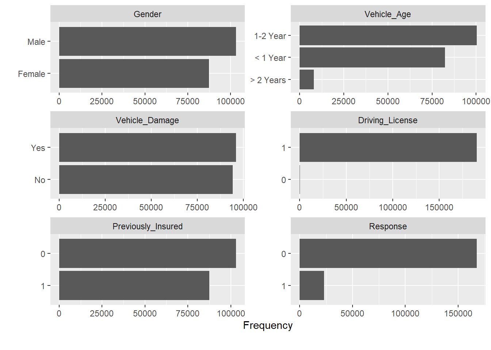

Capítulo 17 Modelo de venta cruzada en el sector asegurador
Las compañías de seguros que operan en múltiples ramos tienen en sus propios clientes potenciales a los que ofrecer seguros de otro ramo. Esta estrategia no es solo beneficiosa para ganar clientes, también es importante para fidelizar e incluso a la hora de seleccionar riesgos. Si un cliente tiene asegurados dos vehículos en la compañía es de suponer que sólo está conduciendo uno de ellos. Por estos motivos un cliente integral en una compañía de seguros aporta más valor.
A continuación se trabaja con un ejemplo de clientes de una compañía aseguradora que están en el ramo de Salud y esta compañía pretende comercializar entre estos clientes su seguro de automóviles, para ello realizó una encuesta y etiquetó a aquellos clientes que estarían interesados en el seguro de automóviles. Los datos empleados para este trabajo se pueden obtener en este link ya que corresponden a una competición de kaggle.
Como se indica en la propia competición:
El cliente es una compañía de seguros que ofrece seguros médicos, ahora ellos realizan un test para construir un modelo que permita predecir si los asegurados (clientes) del año pasado también estarán interesados en el seguro para vehículos provisto por la compañía.
El científico de datos tiene que tener muy claro el objetivo de su trabajo y es claro. Con los datos que provienen de las encuestas es necesario realizar un modelo que permita seleccionar clientes y caracterizar a los clientes para futuras campañas comerciales. Y en este punto comienza el trabajo de modelización.
17.1 Un método de moelización estadística
Cada profesional ha de diseñar su propio método o seguir el que se utilice en el equipo con el que trabaje, en este ensayo se muestra un método probado en múltiples proyectos de ciencia de datos y que engloba todo lo trabajado en capítulos anteriores:

Selección de datos, aproximación a los datos y análisis gráficos descriptivos para describir el problema. El estudio de la variable dependiente, creación de los factores que han de describirla y la modelización. Un breve resumen de todo lo trabajado en este ensayo.
17.2 Conocimiento de los datos
Antes de empezar es necesario disponer de los datos. Proceso ya conocido.
library(tidyverse)
library(DT)
train <- read.csv("./data/train.csv")
datatable(head(train,5))Da comienzo el proceso de modelización.
17.2.1 Muestreo. Datos de entrenamiento, datos de validación, datos de test y prueba ciega.
Para comprobar el correcto funcionamiento de los modelos es necesario separar los datos en distintos conjuntos de datos que permitan medir no sólo la capacidad predictiva del modelo, también hay que velar para que el modelo no se exceda con la complejidad de los parámetros y que éstos puedan servir solamente para el conjunto de datos de entrenamiento. En un proceso de modelización se pueden participar los siguientes conjuntos de datos.

Conjunto de datos de partida o universo. Es el conjunto inicial ya depurado que contiene la información necesaria para realizar el proceso de clasificación binomial mediante la regresión logística.
Conjunto de datos de entrenamiento. Son los datos que se van a emplear para modelizar, como aparece en la figura anterior en ocasiones se balanceará la muestra para incrementar el número de 1’s en el modelo para que el proceso sea capaz de encontrar segmentos e indicios que permitan separar el azar de lo estadísticamente explicable. No hay un porcentaje mínimo de 1’s que indiquen la necesidad de balancear la muestra pero porcentajes por debajo del 5% pueden suponer un problema para una regresión logística.
Conjunto de datos de validación Para evitar el overfitting o la sobreparametrización se separa un conjunto de datos con las mismas características que el conjunto de datos de entrenamiento y se comprueba si el modelo está aprendiendo sólo de los datos de entrenamiento. La regresión logística no adolece de esta problemática pero es buena práctica validar el modelo pero es necesario que exista este conjunto de datos para interactuar con el modelo.
Conjunto de datos de test. Es un conjunto de datos que tiene exactamente las mismas características que el conjunto de datos de partida, se deshacen los posibles balanceos y tiene las mismas proporciones de 1’s que el universo. Sobre él se estudiará el comportamiento del modelo que finalmente seleccione el científico de datos. En el caso de no realizar balanceos se puede prescindir del conjunto de datos de validación y que los datos de test directamente hagan el rol de validación y test.
Prueba ciega. No aparece en la figura, no todos los científicos de datos emplean esta prueba. Se trata de un conjunto de datos que no ha participado en ninguna parte del proceso de modelización pero que supondrá la prueba final para el modelo. Es habitual cuando se trabaja con “cosechas” de datos, conjuntos de datos particionados por periodos temporales, habitualmente meses, donde el último mes disponible puede hacer este rol. De este modo se puede medir con los datos más recientes si el modelo cumple su cometido.
Las proporciones de observaciones para cada uno de los conjuntos de datos la marcará el propio científico de datos. En el ejemplo de trabajo no se dispone de prueba ciega aunque revisando la competición de Kaggle se puede identificar un conjunto de datos que haga ese rol. Se dispone del data frame train que se va a dividir en el conjunto de datos de entrenamiento y de test, se prescinde inicialmente de emplear valicación. Inicialmente, es recomendable emplear menos observaciones en las fases descriptivas porque requiere un alto tiempo de computación y de interacción con los datos. En un primer momento se divide train al 50%.
set.seed(45)
indices <- sample(seq(1:nrow(train)) , round(nrow(train) * 0.50))
entrenamiento <- train[indices,]; nrow(entrenamiento)/nrow(train)## [1] 0.4999987test <- train[-indices,]; nrow(test)/nrow(train)## [1] 0.5000013Se ha dividido train en entrenamiento y test al 50% y sobre entrenamiento dan comienzo las primeras aproximaciones a los datos.
17.2.2 Aproximación inicial a los datos
El primer paso es determinar el rol que juega cada variable dentro del conjunto de datos.
Ides el campo identificativo del cliente, no debe participar en el proceso de modelizaciónResponsees la variable respuesta, será el target- Resto de variables. Variables input
Para el análisis EDA es necesario retomar el uso de de la librería DataExplorer y sin lanzar el análisis EDA al completo se obtienen una serie de gráficos ya conocidos.
library(DataExplorer)
introduce(entrenamiento)## rows columns discrete_columns continuous_columns all_missing_columns total_missing_values complete_rows
## 1 190554 12 3 9 0 0 190554
## total_observations memory_usage
## 1 2286648 13723768plot_histogram(entrenamiento, ncol = 3)
En este punto se tienen problemas conocidos, Policy_Sales_Channel y Region_Code son variables categóricas y aparecen como variables numéricas. Este tipo de situaciones sólo se identifican si se conocen los datos y de nuevo se reitera la necesidad de que el científico de datos se involucre con el problema de negocio y con los propios datos, no se pueden hacer medias de sexo ni contabilizar saldos en fondos de inversión, cada variable tiene su propio análisis como se ha visto a lo largo de todo el ensayo.
entrenamiento <- entrenamiento %>% mutate(
Policy_Sales_Channel = as.factor(Policy_Sales_Channel),
Region_Code = as.factor(Region_Code))Ahora se está en disposición de estudiar los factores disponibles en el conjunto de datos.
plot_bar(entrenamiento, ncol=2)## 2 columns ignored with more than 50 categories.
## Region_Code: 53 categories
## Policy_Sales_Channel: 150 categories
Directamente se obtiene un mensaje que identifica otro problema, precisamente las variables que han de ser factores tienen un gran número de niveles, es necesario realizar un trabajo de agrupación de niveles que se hará con posterioridad. Otro de los problemas que apareció en capítulos anteriores se encuentra en la variable Driving License que sólo toma el valor 1, este hecho tiene todo el sentido ya que no se debe ofrecer un seguro de automóviles a aquel cliente que no dispone de licencia de conducción. Esta variable será eliminada.
entrenamiento <- entrenamiento %>% select(-Driving_License)17.2.3 Creación y clasificación de factores
En las aproximaciones iniciales se han realizado las principales depuraciones de datos, pero no es un proceso acabado, las siguientes iteraciones en el proceso de modelización continuarán con esa labor de depuración. Sin embargo, a partir de ahora el científico de datos ya introduce “su problema” en los análisis. Cuando se tiene una variable target y una variable que ayude a describir ese target se está realizando análisis bivariable que se trabajó en el capítulo 11.
17.3 Modelización
Hay sentadas unas bases teóricas sobre el propósito de la regresión logística, es el momento de realizar un modelo con las variables disponibles y estudiar los parámetros que ofrece la regresión logística. El primer paso será la creación del conjunto de datos de entrenamiento y el conjunto de datos de test.